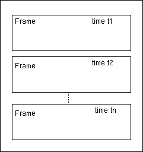

Change Log:
$Log: not supported by cvs2svn $
Revision 1.2 2006/05/05 09:54:54 schwarz
adapted to format version 3:
ascii header frames contain text matrices, no more "special frames"
Revision 1.1 2006/05/05 09:50:31 schwarz
moved SDIF standard specification document from doc/SdifNormDoc.html to doc/standard/sdif-standard.html
SdifNormDoc.html crée le 08/11/1998 Dominique Virolle
The general idea of SDIF is to store information related to signal processing and specifically of sound, in files, according to a common format to all data types. Thus, it is possible to store results or parameters of analyses, syntheses...
In first, the data storage is in the form of matrices where each column represents a field of structure, and each row an element of this structure. A structure which one can represent in the form of matrix is called "simple" in this document.

Thus, for a structure "FilterStruct", made up of three fields "frequency", "amplitude", and "bandwidth", elements of "FilterStruct" are stored like a matrix of three columns and as many rows than there are elements.
| Filter | frequency | amplitude | bandwidth |
|---|---|---|---|
| Filter1 | - | - | - |
| Filter2 | - | - | - |
| FilterN | - | - | - |
The second specification of SDIF is that the matrices are clustered in frames. There are several types of frames: banks of filters, banks of fofs... A frame is addressed to an object containing several sub-objects of structure simple(s). Thus, a frame FilterBank makes it possible to represent a whole of Filters. A structure associated with a frame is called "compound".

With each modification in the time of object parameters, is associated a SDIF frame block for object type. A SDIF file is overall a succession of frames ordered in time.
A file SDIF is composed of several Special Frames in the order:
There should be Time Table but its format and its position were not decided yet.
For any computer equipement of which writes or reads files SDIF, all the data are written in BigEndian IEEE with a alignement of 8 bytes for each block (matrix).
Header of a SDIF file is composed of 3 fields and a padding:
| Signature SDIF | 4 bytes | "SDIF" |
| Header Special Frame Size (Padding included ) |
4 bytes | == 8 (or ffffffff hexa by default) |
| SDIF Specification Version | 4 bytes | == 2 |
| Padding | 4 bytes | '/0' |
| Frame Signature | 4 bytes | char[4] |
| Frame Size (not counting Signature and Size) | 4 bytes | int 4 |
| Time; | 8 bytes | float 8 |
| StreamID | 4 bytes | int 4 |
| Matrix Count | 4 bytes | int 4 |
Frame signature is the type of frame data. The size of the frame not includes signature and size fields. The time must be more or equal than the previous frame. The StreamID refers to frames which have the same ID. The matrix count can be less than matrices number of frame signature type specification. It's possible to omit matrices in a frame. The matrices order is not important.
Data frame is simply a succession of N Matrices. There is no Padding for a frame because the alignement is assumed by the alignement of each matrix.
| Matrix 1 | 8 bytes aligned |
| ... | 8 bytes aligned |
| Matrix N | 8 bytes aligned |
| Matrix Signature | 4 bytes | char |
| Matrix Data Type | 4 bytes | int 4 |
| Row Count | 4 bytes | int 4 |
| Column Count | 4 bytes | int 4 |
The Matrix Signature must be in the Frame Type specification
The Matrix Data Type is represented by a integer
The Row Count depends on the number of simple elements (or sub-objects) which contains the compound object referred by the StreamID field into the frame header. For one element, the relation between two times is made by the position in the matrix which is the same. There will be some matrix types which will have a first column named index. This column makes the link between two time. It's important when a sub-object dies. This is the case, for example, of partials in HMM.
Matrix is written row by row in the file or the stream. It's followed by a eventual padding of 4 bytes set as '\0' for the alignement.
| Row 1 | (4 or 8 bytes)*C | float 4 or 8 |
| ... | (4 or 8 bytes)*C | float 4 or 8 |
| Row L | (4 or 8 bytes)*C | float 4 or 8 |
| Padding | 0 or 4 bytes | '\0' |
( ) : comment in this example.
(frame of a bank of fofs which contains 3 matrices)
'1FOB' <FrameSize> (Time=)1.45 (ID=)0 (Nbmatrix=)3
(matrix 1 : frequency phasor)
'1FQ0' (DataType=)32 (L=)1 (C=)1
(frequency)
164.
(matrix 2 : fofsparameters)
'1FOF' (DataType=)32 (L=)5 (C=)7
(frequency amplitude bandwidth tex atten debatt phase)
609. 80. 78. 0.002 0.05 0.004 0. (fof1)
1000. 53.9 88. 0.002 0.05 0.004 0. (fof2)
2450. 18. 123. 0.002 0.05 0.004 0. (fof3)
2700. 19. 128. 0.002 0.05 0.004 0. (fof4)
3200. 6.1 138. 0.002 0.05 0.004 0. (fof5)
(matrix 3 : fofschannels)
'1CHA' (DataType=)32 (L=)5 (C=)1
(channel1 channel2)
1.5 1. (fof1)
1.5 1. (fof2)
1.5 2.2 (fof3)
1.5 0.5 (fof4)
1.5 1.5 (fof5)
SDIF Special Frames contain one ASCII text matrix with header information at the beginning of the file.
The table of information makes it possible to have general information like the author of the file, the version of SDIF library, the number of cannels... The data of this Special Frame are in an ASCII text matrixwith name-value pairs of meta data.
The data start with ' { ' and finish by ' } '. Each
information is in the form <Name> <Value> ';' .
It is necessary to have at least a space character between the
name and the value (and not the character ' \0 ' because it
is an ASCII part).
Informations Table Data Example :
1NVT text Matrix in 1NVT frame on stream 0xfffffffd (-3):
{
numChannels 6;
IrcamSdifLibraryVersion 1.0.0.alpha;
MonProgrammeParametreSpecial integer4 ;
}
Associated grammar is:
<Info Table Data> := '{' <Info declaration> | ... '}'
<Info declaration> := [<space chars>] <Name>
<space chars> <Value> [<space chars>]';'
<space chars> := <space> | ...
<space> := ' ' | '\t' | '\n' | '\f' | '\r' | '\v'
<Name> := ASCII string
<Value> := ASCII string
It is possible in SDIF to complete the types of matrices or frames existing (cf: Predefined Types) or to create new ones. If types already exists, it is considered that declaration on this type is a completion. If there does not exist, then it is a creation.
However, for a given type, there can be only one declaration in a file SDIF. I.e. a type can't be completed a twice, and create a new type then complete it is forbidden.
As for the tables of information, types declaration data are in ASCII. On the other hand, there can be only one of them.
Important : Creations are highly disadvised because it acts of an exclusive mode linked to an application. Moreover, the first character of types created names must be 'E'. Thus, an exclusive type can be added to the base of the predefined types by replacing the 'E' by a digit. Then, the files using the exclusive type is always readable.
The data of Types Declaration is in ASCII. It starts with '{' and ends by '}'. A data is either a declaration of matrix type, or a declaration of frame type. As a frame type is a whole of matrices, its declaration depends on the declarations of matrices contained types. Two keywords make it possible to know if it is a matrix or a frame declaration : "1MTD" for matrix, "1FTD" for frame.
Note : this both keywords should allow types declaration evoluates to a binary frame with two matrices, one for the matrices declaration and another for the frames declaration. At the moment, the problem is the variability size of a declaration which would be a matrix row.
A matrix type declaration starts by "1MTD". Then follows the matrix type name on 4 characters ASCII of which the first be a figure indicate the type version for a completion or ' E' for a creation. Then, column names declaration is like an array in C.
Examples :
1MTD EFIL {frequency, amplitude, bandwidth}
1MTD 1TM1 { field1, field2, field3 }
1MTD2TM2{field21,field22,field23}
EFIL is a creation, 1TYP and 2TYP are completions.
As the sizes of " 1MTD " and the name of the type are fixed, it is not necessary to have spaces (however, it is preferable).
The field names define columns order in the matrices. This one cannot be modified without creating a new type. Contrary to the structures C, the fields are not typed. This comes owing to the fact that data are always floats on 4 bytes or 8 bytes (cf. Matrix Data).
Matrix Completion :
When matrix type is predefined (there exists like format in SDIF),
a declaration on this type involves the completion mode. Completion consists
in adding new columns (fields) to the matrices (with the simple structures).
Thus, if 1FIL is preset in SDIF with "frequency", "amplitude", and "bandwidth",
1MTD 1FIL {saliance, correction} adds two new columns to
the matrix (4 and 5). But no modifications of the predefined columns is possible.
A frame type declaration starts with "1FTD". Next follows the name of the frame type on 4 ASCII characters whose first digit indicates the type version for a completion or 'E' for a creation. The block of definition starts with '{' and finished by '}'. Each data of the frame type is: a name of an existing matrix type and a field name of structure frame. At the end of each field declaration, there is one ';'.
Example (suppose 1FIB, 1FIL, 1TM1 and 2TM2 exist) :
Creation: exclusive mode
1FTD EFIB
{
1FIL filters;
1TM1 TMexample1;
}
Completion
1FTD 1FIB
{
2TM2 TMexample2;
}
EFIB and 1FIB do not represent the same frame type even if they have same first matrices,
and that the 3 significant letters are 'FIB'.
Thus, one definite EFIB like a frame of 2 matrices. As for the matrices,
if the type of frames is predefined, then one completes frame type by additional matrices.
Thus, if 1FIB is predefined as in the preceding example, if one declares
1FTD 1FIB {2TM2 TMexample2} , then one adds a new matrix to 1FIB.
Important:As the order of matrices in the frame data is not important, a frame type cannot contains more than one matrix of the same matrix type.
<Types Declaration Data> := '{' <Matrix or Frame Declaration> | ... '}'
<Matrix or Frame Declaration> := <Matrix Declaration>
| <Frame Declaration>
<Matrix Declaration> := 1MTD [space chars] <Matrix Name> [space chars]
'{' <Col Names > <One Col Name> '}'
<Matrix Name> := 4 chars (32bits)
<Col Names> := [<(N-1) Col Names>]
<(N-1) Col Names> := <One Col Name Not Last> | ...
<One Col Name Not Last> := <One Col Name> ','
<One Col Name> := [space chars]<string>[space chars]
<string> := ASCII chars
<Frame Declaration> := 1FTD [space chars] <Frame Name> [space chars]
'{' <Frame Component> | ... '}'
<Frame Name> := 4 chars (32bits)
<Frame Component> := [spaces] <Matrix Name>
[spaces] <Frame Component Name>[spaces] ';'
<Frame Component Name> := <string>
Types declaration example:
1TYP text Matrix in 1TYP frame on stream 0xfffffffe (-2)
{
1MTD 1FIL {frequency, amplitude, banwidth}
1MTD 1CHA {channel1, channel2}
1FTD FIB
{
1FIL filtersparameters;
1CHA filterschannels;
}
1MTD 1FOF {frequency, amplitude, banwidth, tex, debatt, atten, phase}
1MTD 1FQ0 {fondamentalfq0}
1FTD 1FOB
{
1FQ0 pitch;
1FOF fofsparameters;
1CHA fofschannels;
}
}
The Special Frame Types Declaration is optionnal.
The table of ID makes it possible to have information on the objects to which the frames will apply. A ID is an integer refering a particular object. Two objects always have two different ID, even if they are different by their types. Thus a ID is an absolute key for an object compared to a file SDIF. The ID==0 is reserved for the special frames.
The data start with ' { ' and ends by ' } '. Each information is in the form <ID> <Source or Destination> : <TreeWay> '; '.
The data are in ASCII.
Stream IDs Table Data example:
1IDS matrix in 1IDS frame on stream 0xffffffff (-1)
{
1 MyProg:Group1/1/FIB/0/12/500./3./80.;
2 MyProg:Group1/1/FIB/1/5/500./3./80.;
3 MyProg:Group1/1/FIB/2/8/500./3./80.;
4 YourProg:FOB/"Fofbank"/4/4/2;
}
Meaning and the construction of TreeWay depend on the Source, but nothing is
predefined. The Source could be a name of program, or a name of method of calculation,
of analysis, synthesis... It is useful for the program which will read the data
and not by that which writes them. This is why one speaks about Source or Destination.
TreeWay can give information on links between object. A component in TreeWay seems
obligatory: there must be the name of the type of the object in TreeWay.
The table of the ID is the means to declare objects which will be modified
in time via the frames.
The grammar is:
<ID Table Data> := '{' <ID declaration> | ... '}'
<ID declaration> := [<space chars>] <ID>
<space chars> <Souce ou Destination> ':'
[<space chars>] <TreeWay> ';'
<space chars> := <space> | ...
<space> := ' ' | '\t' | '\n' | '\f' | '\r' | '\v'
<ID> := ASCII digits
<Source ou Destination>:= ASCII string
<TreeWay> := ASCII string (définition variable)
Les composants de TreeWay sont séparés par le symbol '/'.
| Author | author of the file |
| SDIFTypesVersion | version of the format of the types |
| NVTName | Name of the name value table |
1 november 1998
| Name | Meaning |
|---|---|
| 1FQ0 | fundamental Frequency or excitation of a bank of fofs |
| 1FOF | "Forme d'Onde Formantique" |
| 1CHA | Channels |
| 1RES | Resonnant Filters |
| 1DIS | Distribution of a random process |
1FQ0 {Frequency, Mode, Hit}
Frequency : Fundamental frequency of a bank of fofs >0.(Hz).
Mode : Mode of excitation (0: Frequency, 1:Hit, 2:Both).
Hit : Excitation (Dirac) over a precise time (0: no excitation, 1: excitation).
1FOF {Frequency, Amplitude, BandWidth, Tex, DebAtt, Atten, Phase}
Frequency : Frequency of the fof >0. (Hz).
Amplitude : Lineary amplitude of the envelope of the fof.
BandWidth : Bandwidth of Fof >0. (Hz).
Tex : Time of exitation >0. (seconds).
DebAtt : Moment of beginning of the attenuation of the envelope >0. (seconds).
Atten : Duration of the attenuation >0. (seconds).
Phase : Phase of the sinusoid of the fof 0. with 2pi rad.
1CHA {Channel1, Channel2, Channel3, Channel4}
ChannelX : Linear amplitude on the Channel X >0..
If there is more than 4 channels, it is enough to have types declaration frame
and to make a completion of 1CHA: 1MTD 1CHA { Channel5, Channel6 } One
can thus add the channels one as many than one wishes it.
1RES {Frequency, Amplitude, BandWidth, Saliance, Correction}
Frequency : Frequency of the resonant filter.
Amplitude : Lineary amplitude of the Filter.
BandWidth : Bandwidth of the Filter >0. (Hz).
Saliance : percentage of error of the parameters 0.à 100.
Correction : automatic correction of the amplitude compared to
other parameters 0. to 1.
1DIS {Distribution, Amplitude}
Distribution : type of distribution (not yet definite but 0 means equi-distributed)
Amplitude : variance of the random process (amplitude). This type can be completed
by higher order variances.
| Name | Meaning |
|---|---|
| 1FOB | FOFs bank |
| 1REB | Resonnant filters bank |
| 1NOI | Noise |
1FOB
{
1FQ0 PitchModeHit;
1FOF Formants;
1CHA FormantsChannels;
}
PitchModeHit : excitation of the fofbank. Only 1 row by frame 1FOB.
Formants : parameters of the envelopes of fof.
FormantsChannels : amplitude of output of the fofs on each channel.
1REB
{
1RES Filters;
1CHA FiltersChannels;
}
Filters: paramameters of the filters.
Filterschannels: amplitude of output of the filters on each channel.
1NOI
{
1DIS NoiseInfo;
}
NoiseInfo : Noise parameters.
}